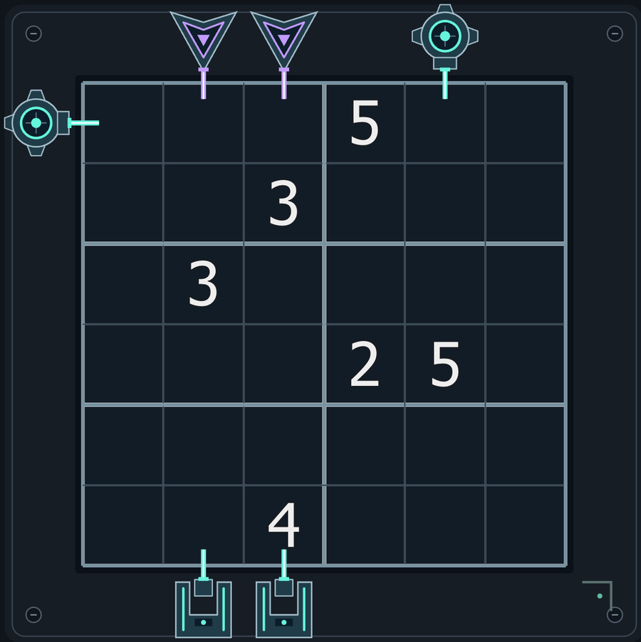
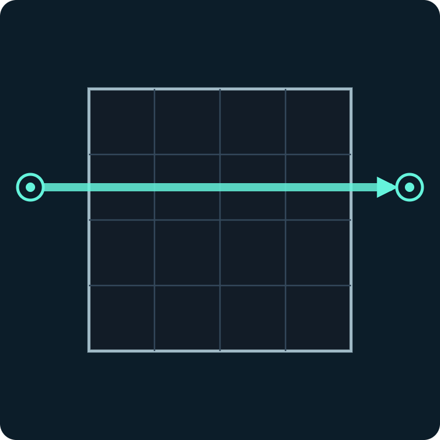
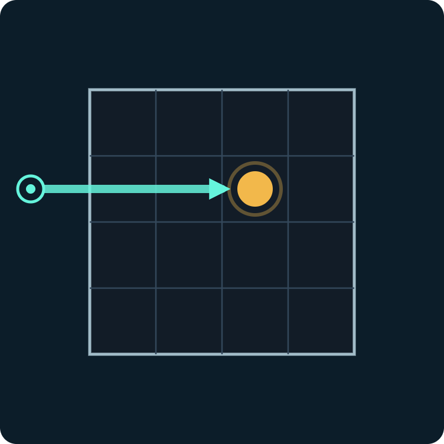
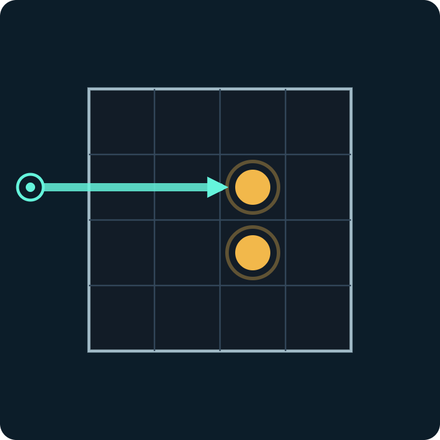
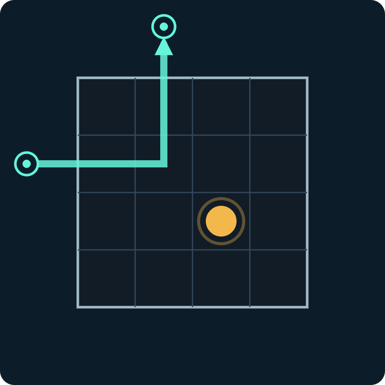
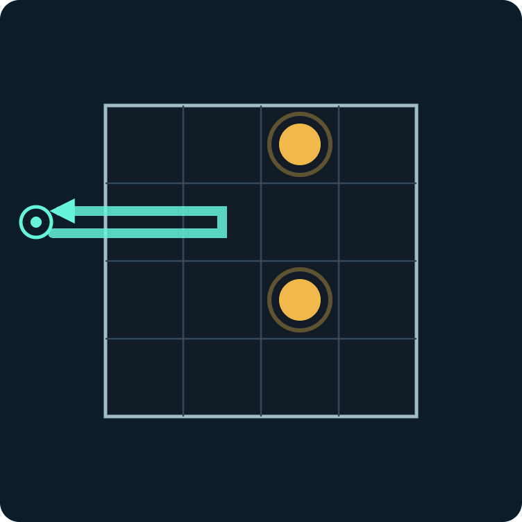
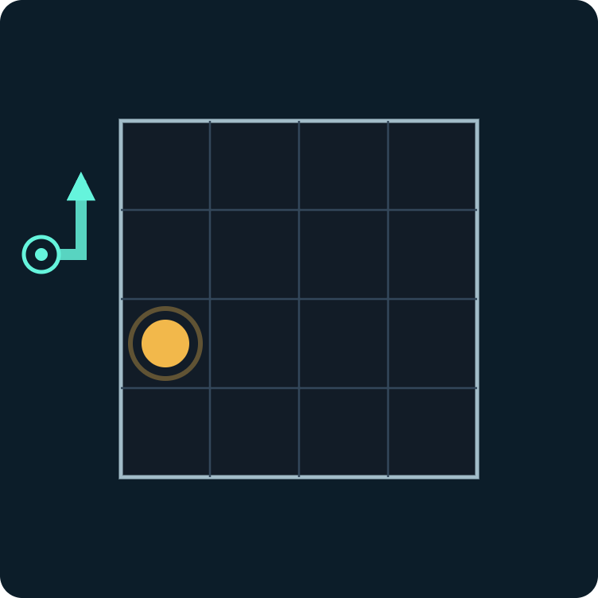

Intro to black box sudoku, find your first atoms!


No atom: straight through.
Atom straight ahead: absorbed.
Straight ahead beats diagonal: still absorbed.
Atom diagonally ahead: turns away.
Atoms diagonally ahead on both sides: straight back.
Atom at the edge: deflected before it enters.The beam turns in the cell before the atom's diagonal. Every cell it passes through, in order, counts as a cell along the beam; a cell it turns in counts once.
Lösungscode: Row 6